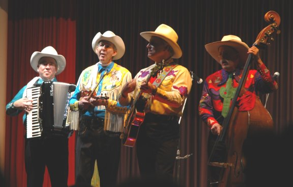

История Country музыки

У музыки кантри есть два основных источника: фольклорные, передаваемые из поколения в поколение, и авторские песни, написанные для исполнения перед аудиторией. Термин кантри употребляется с 1940-х годов, до этого использовалось название хиллбилли (амер. hillbilly music). Опираясь на англо-кельтские народные музыкальные традиции, эта музыка долгое время сохранялась в почти нетронутом виде среди музыкантов-любителей горных районов штатов Теннесси, Кентукки, Северная Каролина.
По своему содержанию песни и баллады, исполняемые кантри-музыкантами, близки к обычной для сельского фольклора тематике. Дух искусства музицирования определялся также подбором таких струнных инструментов, как гитара и мандолина; с самого начала, характерный колорит звучанию музыки придавала скрипка-фиддл — основной музыкальный инструмент американских фермеров на протяжении нескольких веков.
Наш топ интересных исполнителей:
 World of Music
World of Music